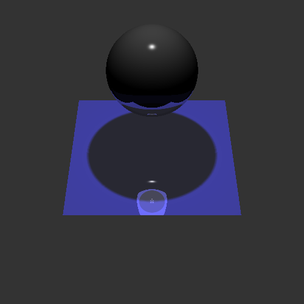
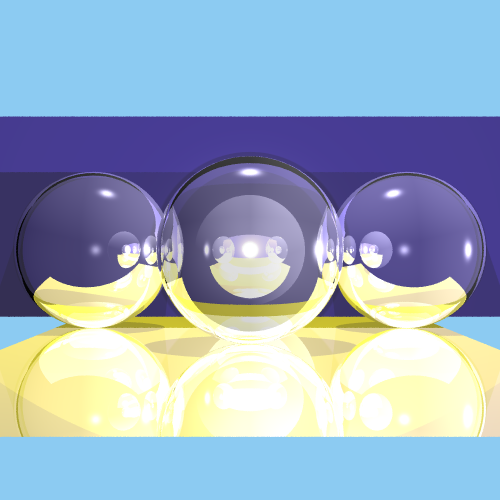

bp5xj's Assignment 2 Submission
Submission Information
- Name: Babak Pourkazemi
- UVA Computing ID: bp5xj
- Compiler: g++
- Environment/platform: Ubuntu 12.04 LTS 32-bit (more details in "setup")
- Number of late days used: 0
-
Implemented sections
- (1) Ray creation - RayScene::GetRay
- (2) Ray casting/intersection - RayGroup::Intersect
- (2) Ray-sphere intersection - RaySphere::Intersect
- (2) Ray-triangle intersection - RayTriangle::Intersect
- (1) Ambient and emissive contributions - RayScene::GetColor
- (2) getDiffuse for all lights
- (2) getSpecular for all lights
- (2) isInShadow for all lights
- (1) Diffuse, specular, and shadow contributions - RayScene::GetColor
- (2) Transformations - RayGroup::intersect
- (1) Reflections - RayScene::GetColor and RayScene::Reflect
- (1) Transparent surfaces - RayScene::GetColor and RayScene::Refract
- (2) Partial shadows - RayScene::GetColor and transparency for all lights
- (2) Refractions - RayScene::GetColor and RayScene::Refract
- (1) Ray-box intersection - RayBox::intersect
- (1) Soft Shadows - RayPointLight::transparency and RaySpotLight::transparency
- (1) Jittered supersampling - RayScene.cpp
- (1) 3D scene with spheres, triangles, all 3 light sources, and a transparent surface
- (1) Art submission
- (1) Ray file submission
- Total Implemented: 29 pts
- (5) Accelerated Ray Tracing
- setBoundingBox for spheres, triangles, and boxes - RayShape::setBoundingBox
- Accumluted bounding boxes to create a parent bounding box, then transform it - RayGroup::setBoundingBox
- Bounding box intersection (makes use of RayBox intersect) - BoundingBox3D::intersect
- Modified RayGroup::intersect to use bounding volumes - RayGroup::intersect
- Total Partially Implemented: 5 pts
- (3) Triangle and sphere texture mapping
- (1) Cylinder intersection
- (1) Cone intersection
- (2) Perlin noise functions
- (1) Real lens simulations
- (1) Bump mapping
- (2) Octree or BSP accelerations
- Total Unimplemented: 11 pts
Setup
My local machine is a Macbook Air running OS X Yosemite (10.10). I used Vagrant to develop in an Ubuntu Linux environment. Details for setting up Vagrant are below. Note that Vagrant depends on VirtualBox, so VirtualBox must be installed prior to Vagrant.
- Install Vagrant as detailed here
- Run "vagrant init hashicorp/precise32" to get Ubuntu 12.04 LTS 32-bit
- Run "vagrant up" to setup the vm
- Run "vagrant ssh" to ssh into the vm
- Once ssh'd, "sudo apt-get update"
- Then, "sudo apt-get upgrade" (ignore any GRUB boot loader warnings by ESC'ing out)
- sudo apt-get install make
- sudo apt-get install g++
- Run "make" to compile the Assignment2 executable (and also compile the JPEG library)
- Type "exit" to leave the vm. Then type "vagrant halt" to shutdown the vm, or "vagrant destroy" to remove all traces of the vm (warning: "vagrant destroy" removes data!).
Notes
- Various todo.cpp files have imported "float.h" to have access to FLT_MIN & FLT_MAX macros
- Jittered supersampling involved modifying rayScene.cpp::rayTrace to generate the "pixel offset" to cast the ray through before calling getRay. This also meant modifying the getRay calculations to no longer do (i + 0.5)/height since the input params i and j already takes the appropriate calculations into account. The amount of supersampling is defined by n in rayScene.cpp::rayTrace
- Creating soft shadows meant creating a dummy square of vertices around the light location, across which we cast shadow rays and find their average. If you cast a small number of shadow rays per pixel (which is defined as the variable s in either rayPointLight.todo.cpp::transparency or raySpotLight.todo.cpp::transparency), you end up with some banding. The greater s, the more sampling you do which leads to less banding and better soft shadows. This can be seen below.
- I made a helper function to do ray-plane intersections for ray-box intersections. This can be found at the top of rayBox.todo.cpp.
- Of the 5 points for accelerated ray tracing, I'm *really really* close to get the first 3 points (that is, the points not including the code for sorting the shapes based on intersection proximity), and not so close with the latter 2 points. See images below.
- The code for accelerated ray tracing using bounding volumes is commented out. To use my nearly-complete bounding volume code, uncomment lines 22-27. To use my less-complete code for sorting the shapes based on intersection proximity, uncomment lines 22-69 and comment out lines 71-93.
Results
- Various todo.cpp files have imported "float.h" to have access to FLT_MIN & FLT_MAX macros
- Jittered supersampling involved modifying rayScene.cpp::rayTrace to generate the "pixel offset" to cast the ray through before calling getRay. This also meant modifying the getRay calculations to no longer do (i + 0.5)/height since the input params i and j already takes the appropriate calculations into account. The amount of supersampling is defined by n in rayScene.cpp::rayTrace
- Creating soft shadows meant creating a dummy square of vertices around the light location, across which we cast shadow rays and find their average. If you cast a small number of shadow rays per pixel (which is defined as the variable s in either rayPointLight.todo.cpp::transparency or raySpotLight.todo.cpp::transparency), you end up with some banding. The greater s, the more sampling you do which leads to less banding and better soft shadows. This can be seen below.
- I made a helper function to do ray-plane intersections for ray-box intersections. This can be found at the top of rayBox.todo.cpp.
- Of the 5 points for accelerated ray tracing, I'm *really really* close to get the first 3 points (that is, the points not including the code for sorting the shapes based on intersection proximity), and not so close with the latter 2 points. See images below.
- The code for accelerated ray tracing using bounding volumes is commented out. To use my nearly-complete bounding volume code, uncomment lines 22-27. To use my less-complete code for sorting the shapes based on intersection proximity, uncomment lines 22-69 and comment out lines 71-93.
Results
Unfortunately, I overwrote the images I had saved at each step. Below are the images that remain.
- Rendering test.ray with supersampling (n=3) and soft shadows (s=3)

--rLimit 5 --cLimit 0.0001 - Rendering test.ray with small supersampling (n=1) and small soft shadows (s=1). Note the banding from casting few shadow rays for soft shadows.

--rLimit 5 --cLimit 0.0001 -
RayBox intersection with n=5 supersampling and high index of refraction

--rLimit 5 --cLimit 0.0001 -
Soft shadows, before and after implementing with a spot light. Also with a point light. Note the properties of the sphere are square were different than test.ray.

 --rLimit 5 --cLimit 0.0001 -
Bounding volume hierarchy results with supersampling n=1 and soft shadows s=1 (bvh is partially implemented, resulting in artifacts as seen below)
--rLimit 5 --cLimit 0.0001 -
Art Submission: 3 transparent spheres, 2 triangles (4 squares). Super sampling n = 3, soft shadows s = 3, rendering time = too long
 --rLimit 3 --cLimit 0.0001